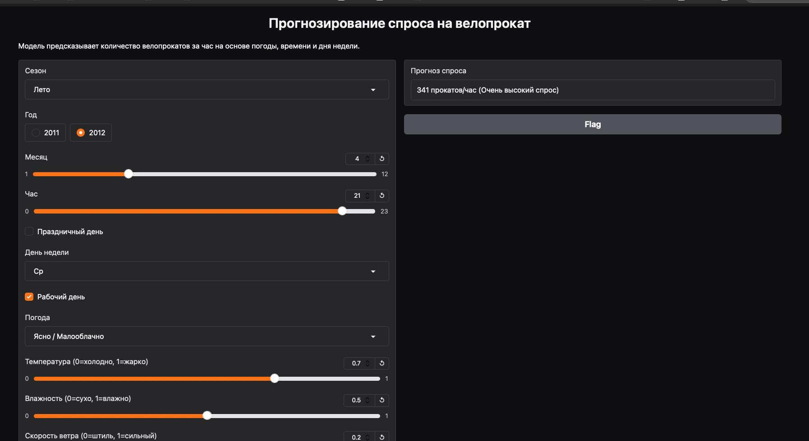

Создание системы, которая предсказывает количество арендованных велосипедов в час на основе погодных и календарных факторов, чтобы помочь городским сервисам проката эффективно распределять ресурсы.
Операторы велопроката (планирование перераспределения), городские транспортные департаменты (развитие инфраструктуры), аналитики урбанистических данных.
Разработать инструмент для точного прогнозирования почасового спроса на основе погодных условий, времени года и календарных данных.
Заранее перераспределять велосипеды по станциям, не дожидаясь возникновения пиковых нагрузок и дефицита.
Реальные данные системы Capital Bikeshare (Вашингтон, США), обогащённые метеорологическими данными за 2011-2012 годы.
season yr mnth hr holiday weekday workingday weathersit
temp atemp hum windspeed
Целевая переменная:
cnt
— количество прокатов за час (1-977, среднее 189)
Своя реализация. Простое правило на одном признаке: предсказание = среднее за этот час суток.
Точка отсчётаBagging. Ансамбль из 200 независимых деревьев, обученных параллельно на случайных подвыборках.
ПобедительBoosting. 200 последовательных деревьев, каждое исправляет ошибки предыдущего.
Альтернатива.pkl файле.
| Модель | MAE | RMSE | R² |
|---|---|---|---|
| Baseline (среднее за час) | 87.34 | 126.83 | 0.4920 |
| RandomForest ★ | 32.67 | 51.48 | 0.9163 |
| GradientBoosting | 34.86 | 51.92 | 0.9149 |
R² = 0.916 — модель объясняет 91.6% дисперсии. Корректно улавливает сезонность и суточные паттерны (утренние и вечерние часы пик), реагирует на погодные изменения. Сложные модели работают в 2.7 раза точнее baseline.
Нелинейные зависимости (влияние температуры не монотонное), наибольшие ошибки в часы пик 17-19 ч — средняя ошибка 50-60 прокатов. Причина — волатильность спроса из-за факторов, которых нет в данных (мероприятия, аварии).

Веб-интерфейс на Gradio: пользователь вводит параметры (час, погода, день недели) и получает прогноз спроса.